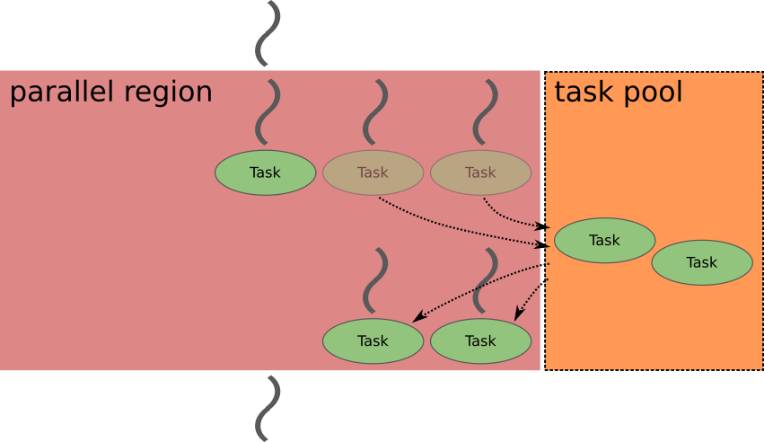
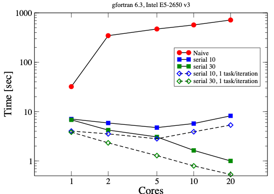
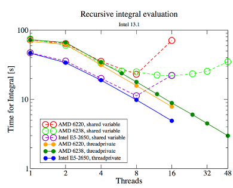

The Task Directive
Objectives
Learn the basic terminology.
Learn about the
taskconstruct.Learn more about data sharing rules.
Learn how to construct a task graph in a three-based manner.
Learn how to construct a task graph in a centralised manner.
Learn how to wait tasks to complete their execution.
Beyond Regular Loops
Regular vs. Irregular Structures
Regular structures considered so far include loops with known bounds and Fortran array constructs.
Many problems have irregular structures, including recursive algorithms, linked lists, loops with unknown bounds (such as while loops), and divide-and-conquer algorithms.
Note
Depending on the details, irregular structures might still be parallelizable using tasks.
The Task Construct
The task construct provides a flexible way to express parallelism for irregular problems. A task creates a unit of work that can run immediately or later on the encountering thread or another thread in the team. An explicit task contains the structured block and its associated data environment.
The encountering thread can execute the task immediately or defer it. A task binds to the innermost parallel region; without an enclosing parallel region it executes in the initial team, without team-level parallelism.
Task directive syntax
#pragma omp task
{
/* code body */
}
!$omp task
! code body
!$omp end task
Common task clauses include if, final, untied, default, mergeable, private, firstprivate, shared, in_reduction, depend, priority, allocate and affinity. detach is supported for C/C++ tasks but not Fortran tasks. Clause availability depends on the OpenMP version.
The familiar if, private, firstprivate, and shared clauses can have task-specific data-sharing behavior.
Hello world: one task created by each thread
#include <stdio.h>
int main() {
#pragma omp parallel
{
#pragma omp task
printf("Hello world!\n");
}
return 0;
}
program hello_tasks
use omp_lib
implicit none
!$omp parallel
!$omp task
print *, "Hello world!"
!$omp end task
!$omp end parallel
end program hello_tasks
In this example, each thread encounters the task construct, producing one explicit task per thread. Any thread in the team can execute any of those tasks. Thus, with N threads, exactly N tasks are created.

The order in which the lines are printed is unspecified. For example, compiling C with gcc -fopenmp -o my_program my_program.c and running the program may print several Hello world! lines.
Allowed Data Sharing Attributes for Tasks
private: a task-local copy, without initialization from the original value.firstprivate: a task-local copy initialized when the task is encountered.shared: tasks refer to the same variable; useful when tasks write results for later consumption.default: controls implicit data-sharing attributes.
Language-specific default-clause syntax (illustrative)
#pragma omp task default(shared)
{ /* work */ }
/* or: default(none), with explicit scoping */
!$omp task default(shared)
! work
!$omp end task
! Alternatively: default(private), default(firstprivate) or default(none)
Data Sharing Without a default Clause
If a variable is shared by all implicit tasks in the current team, the variable is generally shared in an explicit task. Otherwise, it generally becomes firstprivate. Variables declared within the task body are local to that task.
Important
Use default(none) and explicit data-sharing clauses when teaching or auditing task code; consider predetermined attributes as well.
Example: task execution flow
/* code block 1 */
#pragma omp task
{
/* code block 2 */
}
/* code block 3 */
! code block 1
!$omp task
! code block 2
!$omp end task
! code block 3
The encountering thread performs block 1, generates a task for block 2, and eventually executes block 3. It may execute or defer block 2; neither the executing thread nor the completion time of block 2 is generally fixed.
Challenge: Hello World
Use two tasks where each prints out Hello and World strings. Use 4 threads.
Solution
1// On cluster Kebnekaise
2// ml foss
3// export OMP_NUM_THREADS=1
4// gcc -O3 -march=native -fopenmp -o test.x 12a-task-openmp.c -lm
5#include <stdio.h>
6#include <omp.h>
7int main() {
8 #pragma omp parallel num_threads(4)
9 {
10 #pragma omp task
11 {printf("Hello\n");}
12 #pragma omp task
13 {printf("World\n");}
14 }
15 return 0;
16}
Example: shared variable declared outside the parallel region
The following deliberately shows unsynchronized increments to teach how task data-sharing attributes work. Its results are not deterministic; do not use it as a race-free increment pattern.
#include <stdio.h>
int main() {
int number = 1;
#pragma omp parallel
{
#pragma omp task
{
printf("I think the number is %d.\n", number);
number++;
}
}
return 0;
}
program shared_number
use omp_lib
implicit none
integer :: number
number = 1
!$omp parallel shared(number)
!$omp task shared(number)
print *, "I think the number is", number
number = number + 1
!$omp end task
!$omp end parallel
end program shared_number
The original variable belongs to the enclosing shared data environment, so tasks may see each other’s writes. Without synchronization, increments race and some updates may be lost.
Example: variable local to the parallel region
#include <stdio.h>
int main() {
#pragma omp parallel
{
int number = 1;
#pragma omp task
{
printf("I think the number is %d.\n", number);
number++;
}
}
return 0;
}
program firstprivate_number
use omp_lib
implicit none
!$omp parallel
block
integer :: number
number = 1
!$omp task firstprivate(number)
print *, "I think the number is", number
number = number + 1
!$omp end task
end block
!$omp end parallel
end program firstprivate_number
Here each generated task starts with its own copy of number. With firstprivate the value is captured at task creation; all tasks print the initial value 1 (the order of output may vary).
Challenge: Types of variables
Replace the fixme strings with the types of the variables in the code when the defaults are used. (Exercise inspired in an example of Christian Terboven).
1#include <stdio.h> 2#include <omp.h> 3static int first = 1; // File scope (static global) 4int main() { 5 // Variables in main scope 6 int second = 2; 7 int third = 3; 8 #pragma omp parallel private(second) 9 { 10 // Variable in parallel region scope 11 int fourth = 4; 12 #pragma omp task 13 { 14 // Variable in task scope 15 int fifth = 5; 16 // Data scoping in this task: 17 // "first": *fixme* (static global) 18 // "second": *fixme* (private in parallel, becomes firstprivate in task) 19 // "third": *fixme* (declared outside parallel) 20 // "fourth": *fixme* (declared in parallel region) 21 // "fifth": *fixme* (declared in task) 22 printf("1=%d, 2=%d, 3=%d, 4=%d, 5=%d\n", 23 first, second, third, fourth, fifth); 24 } 25 } 26 return 0; 27}Now, use default(none) and write the types of the variables in the fixme strings to have the same behavior as in the previous code:
1#pragma omp parallel private(*fixme*) default(none) shared(*fixme*, *fixme*) 2{ 3 int fourth = 4; 4 #pragma omp task default(none) firstprivate(*fixme*,*fixme*) shared(*fixme*, *fixme*) 5 { 6 int fifth = 5; 7 printf("1=%d, 2=%d, 3=%d, 4=%d, 5=%d\n", 8 first, second, third, fourth, fifth); 9 } 10}
Solution
The variables using default data scope look like:
1#include <stdio.h>
2#include <omp.h>
3static int first = 1; // File scope (static global)
4int main() {
5 // Variables in main scope
6 int second = 2;
7 int third = 3;
8 #pragma omp parallel private(second)
9 {
10 // Variable in parallel region scope
11 int fourth = 4;
12 #pragma omp task
13 {
14 // Variable in task scope
15 int fifth = 5;
16 // Data scoping in this task:
17 // "first": shared (static global)
18 // "second": firstprivate (private in parallel, becomes firstprivate in task)
19 // "third": shared (declared outside parallel)
20 // "fourth": firstprivate (declared in parallel region)
21 // "fifth": private (declared in task)
22 printf("1=%d, 2=%d, 3=%d, 4=%d, 5=%d\n",
23 first, second, third, fourth, fifth);
24 }
25 }
26 return 0;
27}
And not using defaults default(none), the variables will need to be declared as follows to have the same behavior as in the previous code:
1#pragma omp parallel private(second) default(none) shared(first, third)
2{
3 int fourth = 4;
4 #pragma omp task default(none) firstprivate(second, fourth) shared(first, third)
5 {
6 int fifth = 5;
7 printf("1=%d, 2=%d, 3=%d, 4=%d, 5=%d\n",
8 first, second, third, fourth, fifth);
9 }
10}
Single Construct
In the previous examples every team thread created a task. Often, however, only one thread should generate the task graph. Use single inside parallel to arrange that. Any thread may execute the generated tasks.
#include <stdio.h>
int main() {
#pragma omp parallel
#pragma omp single nowait
{
#pragma omp task
printf("Hello world!\n");
}
return 0;
}
program single_task
implicit none
!$omp parallel
!$omp single
!$omp task
print *, "Hello world!"
!$omp end task
!$omp end single nowait
!$omp end parallel
end program single_task
The nowait clause removes the implicit barrier at the end of single; the end of the parallel region still waits for outstanding tasks. This creates only one Hello world! task.
Exercise
Write a program that creates 10 tasks.
Each task should print the thread number of the calling thread.
Hint: From the omp.h header file:
int omp_get_thread_num (void);
Solution
1#include <stdio.h>
2#include <omp.h>
3int main() {
4 #pragma omp parallel
5 #pragma omp single nowait
6 {
7 for (int i = 0; i < 10; i++) {
8 #pragma omp task
9 printf("I am thread no. %d.\n", omp_get_thread_num());
10 }
11 }
12 return 0;
13}
$ gcc -o my_program my_program.c -Wall -fopenmp
$ ./my_program
I am thread no. 5.
I am thread no. 13.
I am thread no. 6.
I am thread no. 8.
I am thread no. 4.
I am thread no. 7.
I am thread no. 15.
I am thread no. 12.
I am thread no. 0.
I am thread no. 9.
Challenge: Behavior of variables
Inspect and run the following code to see the behavior of shared, private, and first private variables in the context of tasks. Notice that one can use atomic updates together with tasks.
1// On cluster Kebnekaise 2// ml foss 3// export OMP_NUM_THREADS=1 4// gcc -O3 -march=native -fopenmp -o test.x 13a-sharedprivate-task-openmp.c -lm 5#include <stdio.h> 6#include <omp.h> 7void process_task(int id, int *shared_data) { 8 printf("Task %d: shared_data = %d\n", id, *shared_data); 9} 10int main() { 11 int shared_data = 100; // variable that is shared across tasks 12 int private_data = 200; // variable is private to each task 13 #pragma omp parallel 14 { 15 #pragma omp single 16 { 17 for (int i = 0; i < 4; i++) { 18 int firstprivate_data = i * 10; // firstprivate variable: unique for each task but initialized with i * 10 19 #pragma omp task shared(shared_data) private(private_data) firstprivate(firstprivate_data, i) 20 { 21 // here we modify the private_data variable, which is unique to each task 22 private_data = i * 100; 23 printf("Task %d: private_data = %d, firstprivate_data = %d\n", i, private_data, firstprivate_data); 24 // Calling a function with shared data 25 process_task(i, &shared_data); 26 // Use an atomic op. for shared_data or critical? 27 #pragma omp atomic 28 shared_data += 1; 29 } 30 } 31 } 32 } 33 printf("Final value of shared_data: %d\n", shared_data); 34 return 0; 35}
Challenge: Behavior of variables in tasks
Inspect and run the following code to see the behavior of first private variables in the context of tasks.
1// On cluster Kebnekaise 2// ml foss 3// export OMP_NUM_THREADS=1 4// gcc -O3 -march=native -fopenmp -o test.x 13b-firstprivate-task-openmp.c -lm 5#include <stdio.h> 6#include <omp.h> 7void task_example() { 8 int n = 5; // a shared variable with an initial value 9 #pragma omp parallel 10 { 11 #pragma omp single 12 { 13 for (int i = 0; i < 5; i++) { 14 #pragma omp task firstprivate(n) 15 { 16 // n is private to each task, initialized with its value at task creation 17 n += i; // Modify n for this task 18 printf("Task %d: n = %d\n", i, n); 19 } 20 } 21 } 22 } 23} 24int main() { 25 task_example(); 26 return 0; 27}
Exercise
The following function takes an integer as input, and writes the thread number that handles
the execution of the function. Use tasks to parallelize a for loop where each task
executes this function:
1void process_element(int i) {
2 // do some work for each element by printing out the thread ID excuting this work
3 printf("Processing element %d in thread %d\n", i, omp_get_thread_num());
4}
Solution
1// On cluster Kebnekaise
2// ml foss
3// export OMP_NUM_THREADS=1
4// gcc -O3 -march=native -fopenmp -o test.x 12c-task-openmp.c -lm
5#include <stdio.h>
6#include <omp.h>
7void process_element(int i) {
8 // do some work for each element by printing out the thread ID excuting this work
9 printf("Processing element %d in thread %d\n", i, omp_get_thread_num());
10}
11int main() {
12 int n = 10;
13 #pragma omp parallel
14 {
15 // single directive ensures that only one thread generates tasks
16 #pragma omp single
17 {
18 for (int i = 0; i < n; i++) {
19 // Create a new task for each array element
20 #pragma omp task
21 {
22 process_element(i);
23 }
24 }
25 printf("Generating tasks \n");
26 }
27 }
28 return 0;
29}
Allowing Suspension of the Current Task
A taskyield is a task scheduling point at which the runtime may suspend the current task and allow another task to run. It is a hint, not a guarantee that another task is scheduled.
taskyield directive
#pragma omp taskyield
!$omp taskyield
This can be useful when a task waits for resources, although it must not be relied on to provide progress or to fix incorrect locking.
Challenge: taskyield behavior
Inspect and run the following code to see the behavior of taskyield in the context of tasks.
1// On cluster Kebnekaise 2// ml foss 3// export OMP_NUM_THREADS=1 4// gcc -O3 -march=native -fopenmp -o test.x 17-taskyield-openmp.c -lm 5// ml GCCcore/12.3.0 Clang/16.0.6 6// clang -O3 -fopenmp -o test.x 17-taskyield-openmp.c 7#include <omp.h> 8#include <stdio.h> 9#include <unistd.h> 10#include <stdlib.h> 11void something_useful(int id,int random_time) { 12 sleep(random_time); // Simulate work 13 printf("Task %d: did something useful on thread %d\n", id, omp_get_thread_num()); 14} 15void something_critical(int id,int random_time) { 16 sleep(random_time); // Simulate longer work 17 printf("Task %d: did something critical on thread %d\n", id, omp_get_thread_num()); 18} 19void foo(omp_lock_t *lock, int n) { 20 srand(1999); // seed the random number generator 21 int min = 1, max = 10; 22 for (int i = 0; i < n; i++) { 23 int random_time1 = rand() % (max - min + 1) + min; 24 int random_time2 = rand() % (max - min + 1) + min; 25 #pragma omp task 26 { 27 something_useful(i,random_time1); 28 // Use taskyield to allow other tasks to execute while waiting 29 while (!omp_test_lock(lock)) { 30 #pragma omp taskyield 31 sleep(5); 32 } 33 something_critical(i,random_time2); 34 omp_unset_lock(lock); 35 } 36 } 37} 38int main() { 39 int n = 10; // Number of tasks 40 omp_lock_t lock; 41 omp_init_lock(&lock); 42 #pragma omp parallel 43 { 44 #pragma omp single 45 foo(&lock, n); 46 } 47 omp_destroy_lock(&lock); 48 return 0; 49}Child tasks and taskwait construct A task can create new child tasks:
Child Tasks and the taskwait Construct
A task can create child tasks. A child may run even after the generating parent task finishes its own structured block. taskwait without clauses waits for the generating task’s direct children; it does not generally wait for all descendants.
Child tasks without an explicit taskwait
#include <stdio.h>
int main() {
#pragma omp parallel
#pragma omp single
{
#pragma omp task
{
#pragma omp task
printf("Hello.\n");
printf("Hi.\n");
}
printf("Hej.\n");
}
printf("Goodbye.\n");
return 0;
}
program child_tasks
implicit none
!$omp parallel
!$omp single
!$omp task
!$omp task
print *, "Hello."
!$omp end task
print *, "Hi."
!$omp end task
print *, "Hej."
!$omp end single
!$omp end parallel
print *, "Goodbye."
end program child_tasks
The output ordering may vary: in particular, Hello. can appear before or after Hi.. Goodbye. is printed after completion of the parallel region.
Adding taskwait
#include <stdio.h>
int main() {
#pragma omp parallel
#pragma omp single
{
#pragma omp task
{
#pragma omp task
printf("Hello.\n");
#pragma omp taskwait
printf("Hi.\n");
}
printf("Hej.\n");
}
printf("Goodbye.\n");
return 0;
}
program waiting_for_children
implicit none
!$omp parallel
!$omp single
!$omp task
!$omp task
print *, "Hello."
!$omp end task
!$omp taskwait
print *, "Hi."
!$omp end task
print *, "Hej."
!$omp end single
!$omp end parallel
print *, "Goodbye."
end program waiting_for_children
In this version Hello. precedes Hi.; Hej. may appear before or after them, and Goodbye. is printed last.
Controlling When Tasks Finish
A taskwait waits for direct child tasks. A barrier requires all participating team threads to arrive, and all explicit tasks bound to the parallel region to complete before the threads pass that barrier. While waiting, a thread may execute other available tasks.
taskwait and barrier syntax
#pragma omp taskwait
/* ... */
#pragma omp barrier
!$omp taskwait
! ...
!$omp barrier
Tasks separated by a barrier
#include <stdio.h>
int main() {
#pragma omp parallel
{
#pragma omp task
printf("Hello.\n");
#pragma omp barrier
#pragma omp task
printf("Goodbye.\n");
}
return 0;
}
program barrier_tasks
implicit none
!$omp parallel
!$omp task
print *, "Hello."
!$omp end task
!$omp barrier
!$omp task
print *, "Goodbye."
!$omp end task
!$omp end parallel
end program barrier_tasks
Every task printing Hello. must complete before any thread passes the barrier to generate a Goodbye. task.
Challenge: taskwait and barrier
Inspect and run the following code to see the behavior of taskwait and barrier in the context of tasks.
1// On cluster Kebnekaise 2// ml foss 3// export OMP_NUM_THREADS=1 4// gcc -O3 -march=native -fopenmp -o test.x 19-taskwait-barrier-openmp.c -lm 5// ml GCCcore/12.3.0 Clang/16.0.6 6// clang -O3 -fopenmp -o test.x 19-taskwait-barrier-openmp.c 7#include <stdio.h> 8#include <omp.h> 9#include <unistd.h> 10void process_task(int task_id) { 11 printf("task %d started by thread %d\n", task_id, omp_get_thread_num()); 12 #pragma omp taskyield 13 // do some work 14 sleep(3); 15 printf("task %d completed by thread %d\n", task_id, omp_get_thread_num()); 16} 17int main() { 18 #pragma omp parallel 19 { 20 #pragma omp single 21 { 22 // create some initial tasks set of tasks 23 for (int i = 0; i < 3; i++) { 24 #pragma omp task 25 process_task(i); 26 } 27 // wait for all tasks created up to now 28 #pragma omp taskwait 29 printf("All tasks at this level completed, but children,grandchildren tasks may still be running.\n"); 30 // Second set of tasks 31 for (int i = 3; i < 6; i++) { 32 #pragma omp task 33 process_task(i); 34 } 35 } 36 // A Barrier synchronizes all threads in the parallel region 37 #pragma omp barrier 38 printf("All threads have reached the barrier.\n"); 39 } 40 return 0; 41}taskgroup: Controlling Descendant Tasks (OpenMP 4.0) A
taskgroupconstruct defines a region with an implied task scheduling point at the end. Current task is suspended until all descendant tasks (including grandchildren, etc.) have completed.
taskgroup: Controlling Descendant Tasks (OpenMP 4.0)
A taskgroup waits for child tasks generated in its lexical region and their descendants, including grandchildren. This provides a more comprehensive wait than an ordinary taskwait.
#pragma omp taskgroup
{
for (int i = 0; i < n; i++) {
#pragma omp task firstprivate(i)
processing(i); /* may generate more tasks */
}
} /* waits for descendants */
!$omp taskgroup
do i = 1, n
!$omp task firstprivate(i)
call processing(i) ! may generate more tasks
!$omp end task
end do
!$omp end taskgroup ! waits for descendants
Controlling Task Creation
Task generation has overhead. If the work per task is too small, execution can become slower than the serial version.
With the if clause on a task construct, a false condition generates an undeferred task which is executed immediately by the encountering thread rather than deferred for later execution. This is useful for controlling task granularity.
if clause
#pragma omp task if(level < 10)
{
process(level);
}
!$omp task if(level < 10)
call process(level)
!$omp end task
Challenge: if clause
Inspect and run the following code to see the behavior of if clause in the context of tasks.
1// On cluster Kebnekaise 2// ml foss 3// export OMP_NUM_THREADS=1 4// gcc -O3 -march=native -fopenmp -o test.x 15-ifclause-task-openmp.c -lm 5#include <stdio.h> 6#include <omp.h> 7void process_task(int task_id) { 8 printf("Processing iteration task %d in thread %d\n", task_id, omp_get_thread_num()); 9} 10int main() { 11 int n = 5; // Threshold for deciding if the task is executed synchronously or asynchrously 12 #pragma omp parallel 13 { 14 #pragma omp single 15 { 16 for (int i = 0; i < 10; i++) { 17 // the task creation will depend on the value of "i" and the clause with "if" condition 18 #pragma omp task if(i > n) // Tasks with i > n are deferred; others run in the current thread 19 { 20 process_task(i); 21 // childrens behave as regular tasks (can be deferred) 22 #pragma omp task 23 { 24 printf("Nested task for %d in thread %d\n", i, omp_get_thread_num()); 25 } 26 } 27 } 28 } 29 } 30 return 0; 31}Final Tasks A task can carry a
finalclause to control task generation in descendants. Syntax
Final Tasks
The final clause marks the generated task as final if its expression is true. Child tasks encountered within a final task are themselves final and included. This reduces task creation overhead in deep recursion; it does not prevent the task’s own code from recursively executing.
final clause
#pragma omp task final(level > 30)
{
process(level);
}
!$omp task final(level > 30)
call process(level)
!$omp end task
Challenge: final clause
Inspect and run the following code to see the behavior of final clause in the context of tasks.
1// On cluster Kebnekaise 2// ml foss 3// export OMP_NUM_THREADS=1 4// gcc -O3 -march=native -fopenmp -o test.x 16-finalclause-task-openmp.c -lm 5#include <stdio.h> 6#include <omp.h> 7void process_task(int task_id) { 8 printf("Processing iteration task %d in thread %d\n", task_id, omp_get_thread_num()); 9} 10int main() { 11 int n = 5; // Threshold for the final clause 12 #pragma omp parallel 13 { 14 #pragma omp single 15 { 16 for (int i = 0; i < 10; i++) { 17 // when i <= n, the task and its child tasks are final and included 18 // when i > n, task is final and child tasks are regular tasks 19 #pragma omp task final(i <= n) 20 { 21 process_task(i); 22 #pragma omp task 23 { 24 printf("Nested task for %d in thread %d\n", i, omp_get_thread_num()); 25 #pragma omp task 26 { 27 printf("Subnested task for %d in thread %d\n", i, omp_get_thread_num()); 28 } 29 } 30 } 31 } 32 } 33 } 34 return 0; 35}Mergeable Tasks A task can be declared as
mergeablefor optimization. Syntax
Mergeable Tasks
A task may be declared mergeable. If it is undeferred or included, the implementation may reuse the generating task’s data environment as an optimization; this is optional and code must not depend on whether the optimization occurs.
mergeable clause
#pragma omp task mergeable
{
process();
}
!$omp task mergeable
call process()
!$omp end task
Challenge: mergeable clause
Inspect and run the following code to see the behavior of mergeable clause in the context of tasks.
1// On cluster Kebnekaise 2// ml foss 3// export OMP_NUM_THREADS=1 4// gcc -O3 -march=native -fopenmp -o test.x 18b-mergeable-task-openmp.c -lm 5// ml GCCcore/12.3.0 Clang/16.0.6 6// clang -O3 -fopenmp -o test.x 18b-mergeable-task-openmp.c 7#include <omp.h> 8#include <stdio.h> 9void process_task(int task_id) { 10 printf("Processing task %d on thread %d\n", task_id, omp_get_thread_num()); 11} 12int main() { 13 int n = 10; // nr. of iterations 14 #pragma omp parallel 15 { 16 #pragma omp single 17 { 18 for (int i = 0; i < n; i++) { 19 // tasks with the mergeable clause 20 #pragma omp task mergeable 21 { 22 process_task(i); 23 } 24 } 25 } 26 } 27 return 0; 28}
Task Scheduling Points
The runtime may switch tasks at scheduling points, including immediately after task creation, task completion, taskwait/taskyield, explicit or implicit barriers, and at the end of a taskgroup.
Warning
Untied tasks can resume on a different thread at task scheduling points. Be especially careful with locks and thread-local state; incorrect use can deadlock.
Case Study 1: Recursive Fibonacci
Fibonacci numbers satisfy the recurrence:
The sequence starts 0, 1, 1, 2, 3, 5, 8, 13, 21, 34, .... Recursive Fibonacci is inefficient as a real numerical algorithm, but useful for demonstrating OpenMP tasks.
Recursion tree
n
|-- n-1
| |-- n-2
| `-- n-3
`-- n-2
|-- n-3
`-- n-4
Serial Fibonacci implementation
unsigned long long recursive_fib(int in) {
unsigned long long fibnum, sub1, sub2;
if (in > 1) {
sub1 = recursive_fib(in - 1);
sub2 = recursive_fib(in - 2);
fibnum = sub1 + sub2;
} else {
fibnum = in;
}
return fibnum;
}
recursive function recursive_fib(in) result(fibnum)
integer, intent(in) :: in
integer(lint) :: fibnum, sub1, sub2
if (in .gt. 1) then
sub1 = recursive_fib(in - 1)
sub2 = recursive_fib(in - 2)
fibnum = sub1 + sub2
else
fibnum = in
endif
end function recursive_fib
Parallel attempt 1: create one task
unsigned long long recursive_fib(int in) {
unsigned long long fibnum, sub1, sub2;
if (in > 1) {
#pragma omp task shared(sub1) firstprivate(in)
{
sub1 = recursive_fib(in - 1);
}
sub2 = recursive_fib(in - 2);
fibnum = sub1 + sub2;
} else {
fibnum = in;
}
return fibnum;
}
recursive function recursive_fib(in) result(fibnum)
integer, intent(in) :: in
integer(lint) :: fibnum, sub1, sub2
if (in .gt. 1) then
!$OMP task shared(sub1) firstprivate(in)
sub1 = recursive_fib(in - 1)
!$OMP end task
sub2 = recursive_fib(in - 2)
fibnum = sub1 + sub2
else
fibnum = in
endif
end function recursive_fib
Here sub1 must be shared to return the computed result, while in is copied at task creation. The attempt is missing a wait before reading sub1.
Parallel attempt 2: create two tasks (incorrect)
unsigned long long recursive_fib(int in) {
unsigned long long fibnum, sub1, sub2;
if (in > 1) {
#pragma omp task shared(sub1) firstprivate(in)
{
sub1 = recursive_fib(in - 1);
}
#pragma omp task shared(sub2) firstprivate(in)
{
sub2 = recursive_fib(in - 2);
}
fibnum = sub1 + sub2;
} else {
fibnum = in;
}
return fibnum;
}
recursive function recursive_fib(in) result(fibnum)
integer, intent(in) :: in
integer(lint) :: fibnum, sub1, sub2
if (in .gt. 1) then
!$OMP task shared(sub1) firstprivate(in)
sub1 = recursive_fib(in - 1)
!$OMP end task
!$OMP task shared(sub2) firstprivate(in)
sub2 = recursive_fib(in - 2)
!$OMP end task
fibnum = sub1 + sub2
else
fibnum = in
endif
end function recursive_fib
Danger
This attempt uses sub1 and sub2 before the child tasks are guaranteed to finish. It is intentionally incorrect.
Parallel final solution: taskwait
unsigned long long recursive_fib(int in) {
unsigned long long fibnum, sub1, sub2;
if (in > 1) {
#pragma omp task shared(sub1) firstprivate(in)
{
sub1 = recursive_fib(in - 1);
}
#pragma omp task shared(sub2) firstprivate(in)
{
sub2 = recursive_fib(in - 2);
}
#pragma omp taskwait
fibnum = sub1 + sub2;
} else {
fibnum = in;
}
return fibnum;
}
recursive function recursive_fib(in) result(fibnum)
integer, intent(in) :: in
integer(lint) :: fibnum, sub1, sub2
if (in .gt. 1) then
!$OMP task shared(sub1) firstprivate(in)
sub1 = recursive_fib(in - 1)
!$OMP end task
!$OMP task shared(sub2) firstprivate(in)
sub2 = recursive_fib(in - 2)
!$OMP end task
!$OMP taskwait
fibnum = sub1 + sub2
else
fibnum = in
endif
end function recursive_fib
taskwait waits for the two children at each recursive call. Each child call manages its own descendants.
Calling Fibonacci from serial code
#include <stdio.h>
#include <stdlib.h>
int main(int argc, char *argv[]) {
unsigned long long fibres;
int input;
printf("Enter input: ");
scanf("%d", &input);
fibres = recursive_fib(input);
printf("Fibonacci number %d is: %llu\n", input, fibres);
return 0;
}
program fibonacci
!$ use omp_lib
integer, parameter :: lint = selected_int_kind(10)
integer(lint) :: fibres
integer :: input
read (*,*) input
fibres = recursive_fib(input)
print *, "Fibonacci number", input, " is:", fibres
end program fibonacci
Incorrect: starting a parallel region without single
#include <stdio.h>
#include <stdlib.h>
#include <omp.h>
int main(int argc, char *argv[]) {
unsigned long long fibres;
int input;
printf("Enter input: ");
scanf("%d", &input);
#pragma omp parallel shared(input, fibres) default(none)
{
fibres = recursive_fib(input);
}
printf("Fibonacci number %d is: %llu\n", input, fibres);
return 0;
}
program fibonacci
!$ use omp_lib
integer, parameter :: lint = selected_int_kind(10)
integer(lint) :: fibres
integer :: input
read (*,*) input
!$OMP parallel shared(input, fibres) default(none)
fibres = recursive_fib(input)
!$OMP end parallel
print *, "Fibonacci number", input, " is:", fibres
end program fibonacci
Danger
Every thread redundantly starts the entire Fibonacci calculation.
Correct: one thread starts Fibonacci using single
#include <stdio.h>
#include <stdlib.h>
#include <omp.h>
int main(int argc, char *argv[]) {
unsigned long long fibres;
int input;
printf("Enter input: ");
scanf("%d", &input);
#pragma omp parallel shared(input, fibres) default(none)
{
#pragma omp single
{
fibres = recursive_fib(input);
}
}
printf("Fibonacci number %d is: %llu\n", input, fibres);
return 0;
}
program fibonacci
!$ use omp_lib
integer, parameter :: lint = selected_int_kind(10)
integer(lint) :: fibres
integer :: input
read (*,*) input
!$OMP parallel shared(input, fibres) default(none)
!$OMP single
fibres = recursive_fib(input)
!$OMP end single
!$OMP end parallel
print *, "Fibonacci number", input, " is:", fibres
end program fibonacci
The single construct ensures that only one thread initiates the recursion while the full team can run tasks. The Fortran function fragments assume lint is defined in an appropriate enclosing module or scope, as in the original example.
Performance: Fibonacci Number 40
Task overhead: Creating tasks has measurable cost, so recursive tasks should contain enough work. Common optimization strategies are to stop deferring tasks below a recursion threshold, limit the number of tasks, and balance parallelism against overhead.
Using if to reduce task deferral
#pragma omp task shared(sub1) firstprivate(in) if(in > 30)
{ sub1 = recursive_fib(in - 1); }
#pragma omp task shared(sub2) firstprivate(in) if(in > 30)
{ sub2 = recursive_fib(in - 2); }
#pragma omp taskwait
!$omp task shared(sub1) firstprivate(in) if(in > 30)
sub1 = recursive_fib(in - 1)
!$omp end task
!$omp task shared(sub2) firstprivate(in) if(in > 30)
sub2 = recursive_fib(in - 2)
!$omp end task
!$omp taskwait
Original benchmark: Fibonacci(40) on Intel E5-2650 v3 hardware; gfortran 6.3 and ifort 17.1 with thread binding. The original material reports poor performance with two tiny tasks per call, improvement from conditional tasks, and further improvement with fewer tasks.


Hardware: Two sockets, 10 cores per Intel E5-2650 v3 processor. Benchmark results are historical and hardware/compiler-specific.
Case Study 2: Self-Refining Recursive Integrator
Irregular numerical grids often benefit from dynamic mesh refinement, such as refining where a fluid-dynamics eddy develops and coarsening where it disappears.
Adaptive integration algorithm: Evaluate a function at five points in an interval, compare a five-point estimate against a coarser three-point estimate, and accept the interval if the error is sufficiently small. Otherwise, divide the interval into two subintervals and recurse using tasks.
Start the recursive integrator once
/* Illustrative fragment in an enclosing C function. */
double accumulator = 0.0;
#pragma omp parallel shared(accumulator, startv, stopv, unit_err, gen_num)
{
#pragma omp single
rec_eval_shared_update(startv, stopv, unit_err, gen_num,
&accumulator);
}
accumulator = 0.0D0
!$OMP parallel default(none) &
!$OMP shared(accumulator) &
!$OMP shared(startv, stopv, unit_err, gen_num)
!$OMP single
call rec_eval_shared_update( &
startv, stopv, unit_err, gen_num)
!$OMP end single
!$OMP end parallel
A shared accumulator stores the result. The single directive launches recursion only once; the parallel region completion waits for generated tasks. The C example is an added conceptual counterpart: its routine accepts a pointer to the accumulator rather than using a Fortran module variable. Inside the recursive C routine, the pointer is firstprivate in generated tasks, but the pointee is shared.
Generate tasks for both half-intervals
/* my_start, my_stop, u_err, my_gen and task_start
are values visible in the surrounding function. */
#pragma omp task firstprivate(accumulator, my_start, my_stop, u_err, my_gen) if(task_start)
rec_eval_shared_update(my_start, 0.5 * (my_start + my_stop),
u_err, my_gen, accumulator);
#pragma omp task firstprivate(accumulator, my_start, my_stop, u_err, my_gen) if(task_start)
rec_eval_shared_update(0.5 * (my_start + my_stop), my_stop,
u_err, my_gen, accumulator);
!$OMP task shared(accumulator) firstprivate(my_start, my_stop) &
!$OMP default(none) firstprivate(my_gen, u_err) &
!$OMP if(task_start)
call rec_eval_shared_update( &
my_start, 0.5_dpr * (my_start + my_stop), u_err, my_gen)
!$OMP end task
!$OMP task shared(accumulator) firstprivate(my_start, my_stop) &
!$OMP default(none) firstprivate(my_gen, u_err) &
!$OMP if(task_start)
call rec_eval_shared_update( &
0.5_dpr * (my_start + my_stop), my_stop, u_err, my_gen)
!$OMP end task
Each task may recursively subdivide again. if(task_start) can limit deferred-task creation at deeper generations.
Accumulating results: A simple strategy uses atomic updates of a shared accumulator. Another option uses threadprivate accumulation, although threadprivate state belongs to a thread, not to an explicit task, so care is needed around task scheduling points. Newer OpenMP versions also support task reductions.
Atomic accumulation
#pragma omp atomic update
*accumulator += contribution;
!$omp atomic update
accumulator = accumulator + contribution
Warning
For threadprivate accumulation, ensure correctness across task scheduling and synchronization points. Threadprivate state must not be confused with task-private state.
Test function
The oscillatory function motivates localized refinement.
Original performance setup: Tasks started every fifth generation, comparing two accumulation strategies. The original measurements found high overhead for millions of atomic updates and better scaling for threadprivate accumulation, up to 128 cores.


Note
In the original benchmark, GCC scaled less effectively than Intel’s compiler beyond approximately 20 cores. These are historical performance observations.
Task Dependencies (OpenMP 4.0)
Task dependences express ordering constraints between sibling tasks. depend(in: ...) waits for earlier siblings writing matching storage, whereas depend(out: ...) and depend(inout: ...) also order writers against preceding readers and writers. Array sections may appear as list items.
Dependency clause syntax
#pragma omp task depend(in: a)
use_value(a);
!$omp task depend(in: a)
call use_value(a)
!$omp end task
Task dependency example
#pragma omp task depend(out: a)
task_function_1(&a);
#pragma omp task depend(in: a)
task_function_2(a);
#pragma omp task depend(in: a)
task_function_3(a);
!$omp task depend(out: a)
call task_function_1(a)
!$omp end task
!$omp task depend(in: a)
call task_function_2(a)
!$omp end task
!$omp task depend(in: a)
call task_function_3(a)
!$omp end task
First, the task writing a completes; afterward, the two tasks reading a may proceed in parallel. This permits more flexible scheduling than a whole-team barrier.
Challenge: behavior of dependencies
Inspect and run the following code to see the behavior of dependencies in the context of tasks.
1// On cluster Kebnekaise 2// ml foss 3// export OMP_NUM_THREADS=1 4// gcc -O3 -march=native -fopenmp -o test.x 14-lifecycle-task-openmp.c -lm 5#include <stdio.h> 6#include <omp.h> 7int taskA(int *a) { 8 *a += 1; 9 printf("Executing taskA, a=%d\n",*a); 10} 11int taskB(int *a, int *b) { 12 *a += 1; 13 *b += 1; 14 printf("Executing taskB, a=%d b=%d\n", *a,*b); 15} 16int taskC(int *a, int *b, int *c) { 17 *a += 1; 18 *b += 1; 19 *c += 1; 20 printf("Executing taskC, a=%d b=%d c=%d\n",*a,*b,*c); 21} 22int main() { 23 int a = 0; 24 int b = 0; 25 int c = 0; 26 #pragma omp parallel 27 { 28 #pragma omp single 29 { 30 #pragma omp task depend(out : a) 31 taskA(&a); // taskA runs independently 32 #pragma omp task depend(in : a) depend(out : b) 33 taskB(&a,&b); // taskB is suspended until taskA completes 34 // when dependencies are satisfied the task is resumed 35 // and is ready to continue 36 #pragma omp task depend(in : b) 37 taskC(&a,&b,&c); // taskC is suspended until taskB completes 38 } 39 } 40 return 0; 41}
Challenge: Fibonacci task dependencies
In the previous implementation of the Fibonacci generator code, we noticed that the values of Fibonacci numbers are computed several times during recursion. This situation can be avoided by using task dependencies, as in the following graph which shows the dependencies that we can create explicitl for the Fibonacci number 6:
fib[6] depends on fib[5] and fib[4] | v fib[5] depends on fib[4] and fib[3] | v fib[4] depends on fib[3] and fib[2] / \ v v fib[3] fib[2] depends on fib[2] and fib[1] depends on fib[1] and fib[0] \| \ | \ v v v v fib[2] fib[1] fib[1] fib[0] depends on fib[1] and fib[0] \| \ v v fib[1] fib[0] Base values: fib[1] = 1 fib[0] = 0Write a code for the Fibonacci numbers generator but now using task dependencies.
Solution
1// On cluster Kebnekaise
2// ml foss
3// export OMP_NUM_THREADS=4
4// gcc -O3 -march=native -fopenmp -o test.x fibonacci_task_dependencies.c -lm
5#include <stdio.h>
6#include <stdlib.h>
7#include <omp.h>
8int main(int argc, char* argv[]) {
9 int n = (argc > 1) ? atoi(argv[1]) : 40;
10 unsigned long long *fib = malloc((n+1) * sizeof(unsigned long long));
11 #pragma omp parallel
12 {
13 #pragma omp single
14 {
15 // Base cases
16 #pragma omp task depend(out: fib[0])
17 { fib[0] = 0; }
18 #pragma omp task depend(out: fib[1])
19 { fib[1] = 1; }
20 // Create tasks for F(2) .. F(n)
21 for (int i = 2; i <= n; i++) {
22 #pragma omp task depend(in: fib[i-1], fib[i-2]) depend(out: fib[i])
23 {
24 fib[i] = fib[i-1] + fib[i-2];
25 }
26 }
27 // Wait until fib[n] is available
28 #pragma omp taskwait
29 printf("fib(%d) = %llu\n", n, fib[n]);
30 }
31 }
32 free(fib);
33 return 0;
34}
taskloop Construct (OpenMP 4.5)
The taskloop construct partitions iterations into tasks rather than assigning iterations directly to threads as omp for or omp do does. Unless nogroup is present, it implies a taskgroup that waits for the generated loop tasks.
Basic taskloop syntax
#pragma omp taskloop shared(a) firstprivate(n)
for (int i = 0; i < n; i++) {
a[i] = expensive_function(i);
}
!$omp taskloop shared(a) firstprivate(n)
do i = 1, n
a(i) = expensive_function(i)
end do
!$omp end taskloop
Clauses for taskloop
Clauses include if, shared, private, firstprivate, lastprivate, default, collapse, final, nogroup, grainsize and num_tasks. Modern OpenMP versions also support reduction on taskloop; this was not supported by the original course’s older OpenMP-version notes. in_reduction is also available in appropriate contexts.
There is also a taskloop simd construct for vectorization.
Challenge: taksloop
Inspect and run the following code to see the behavior of taskloop in the context of tasks.
1// On cluster Kebnekaise 2// ml foss 3// export OMP_NUM_THREADS=1 4// gcc -O3 -march=native -fopenmp -o test.x 20a-taskloop-openmp.c -lm 5#include <stdio.h> 6#include <omp.h> 7void process_iteration(int i) { 8 printf("Processing iteration %d in thread %d\n", i, omp_get_thread_num()); 9} 10int main() { 11 int n = 10; // Number of iterations 12 #pragma omp parallel 13 { 14 // Use taskloop to distribute iterations as tasks 15 #pragma omp single 16 { 17 #pragma omp taskloop 18 for (int i = 0; i < n; i++) { 19 process_iteration(i); 20 } 21 } 22 } 23 return 0; 24}
Challenge: taskloop
Inspect and run the following code to see the behavior of taskloop in the context of tasks.
1// On cluster Kebnekaise 2// ml foss 3// export OMP_NUM_THREADS=1 4// gcc -O3 -march=native -fopenmp -o test.x 20b-taskloop-openmp.c -lm 5#include <stdio.h> 6#include <omp.h> 7int main() { 8 int n = 2000; // Number of iterations 9 int sumR = 0; // Summation 10 #pragma omp parallel shared(sumR) 11 { 12 // Use taskloop to distribute iterations as tasks 13 #pragma omp single 14 { 15 #pragma omp taskloop 16 for (int i = 0; i < n; i++) { 17 #pragma omp atomic 18 sumR +=1; 19 } 20 } 21 } 22 printf("Total summation = %d \n", sumR); 23 return 0; 24}
Controlling the Number of Tasks Created
Task granularity is a balance between parallelism and overhead. grainsize and num_tasks are alternative clauses and cannot be used together on the same taskloop.
grainsize
#pragma omp taskloop grainsize(100)
for (int i = 0; i < n; ++i) work(i);
!$omp taskloop grainsize(100)
do i = 1, n
call work(i)
end do
!$omp end taskloop
grainsize controls the number of iterations assigned to each generated task, generally between the specified grain size and twice that size, subject to the final partition.
num_tasks
#pragma omp taskloop num_tasks(10)
for (int i = 0; i < n; ++i) work(i);
!$omp taskloop num_tasks(10)
do i = 1, n
call work(i)
end do
!$omp end taskloop
num_tasks requests approximately the specified number of tasks; the actual partitioning depends on the iteration count and runtime rules.
Task Construct:
Flexible parallelism for irregular problems
Tasks can be created dynamically
Execution by any thread, now or later
Task Scheduling:
Task scheduling points
taskwait: wait for child taskstaskgroup: wait for all descendantstaskyield: allow suspension
Task Completion:
Multiple mechanisms to control when tasks finish
Dependencies between tasks (OpenMP 4.0)
Performance Aspects:
Task creation has overhead
Need decent amount of work per task
Use
ifandfinalclauses to control task generationBalance between parallelism and overhead
Case Studies:
Recursive Fibonacci: demonstrated task basics
Self-refining integrator: demonstrated adaptive algorithms
Advanced Features:
taskloop(OpenMP 4.5): distribute loops onto tasksTask dependencies: explicit ordering
Various accumulation strategies for results